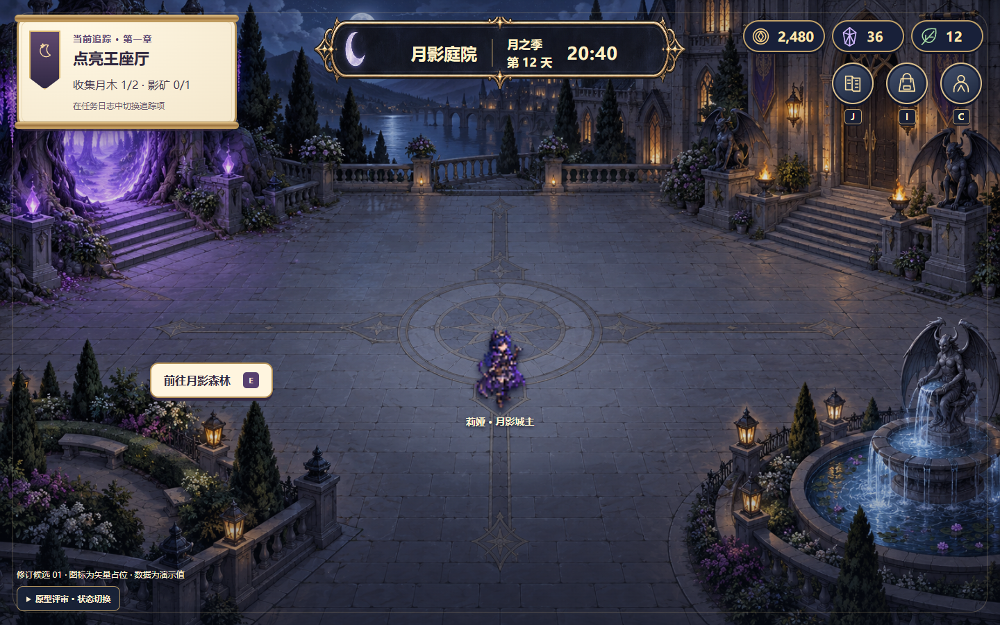
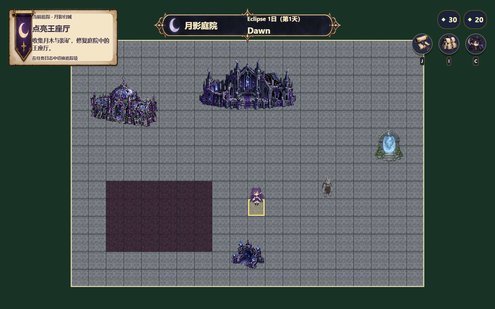
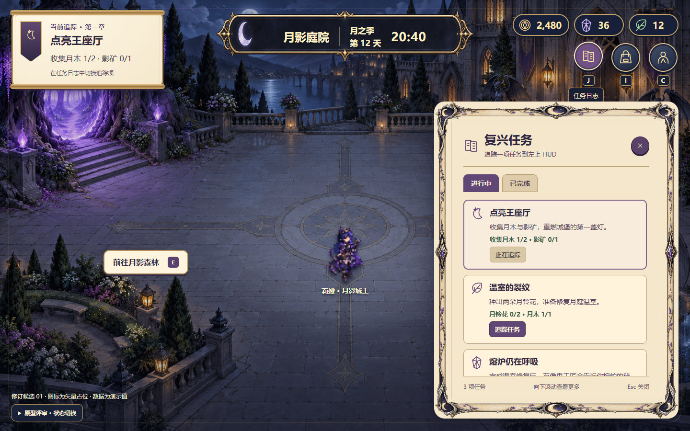
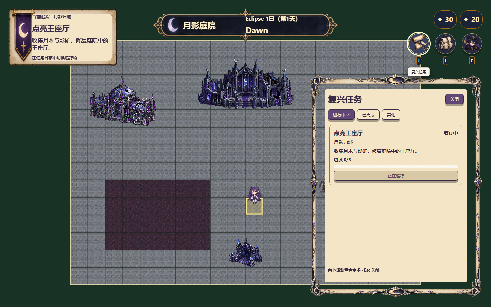
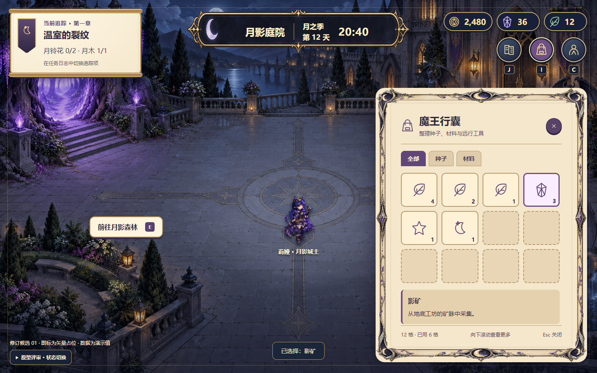
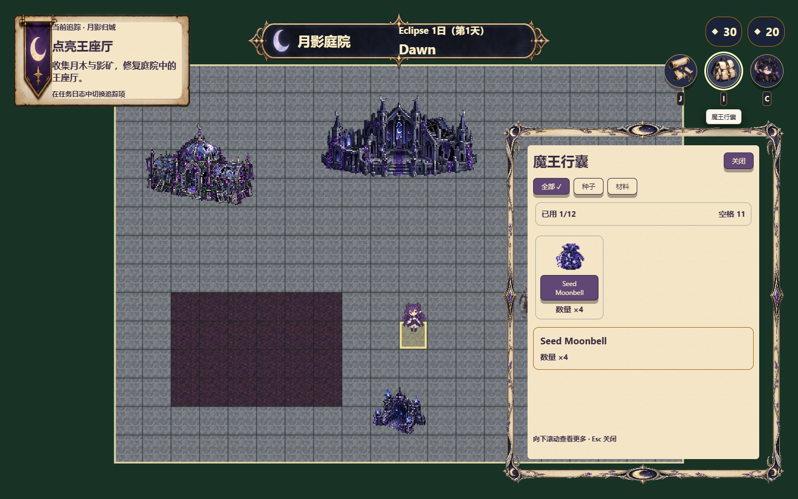
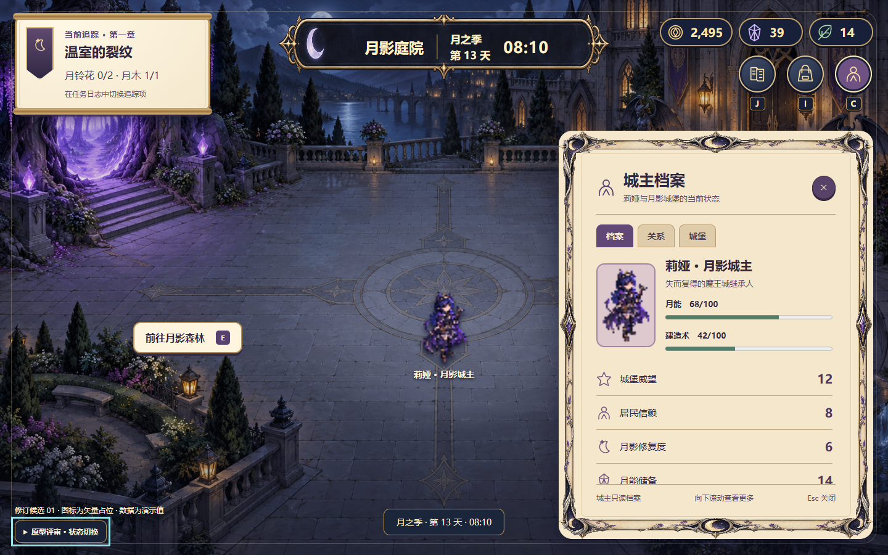
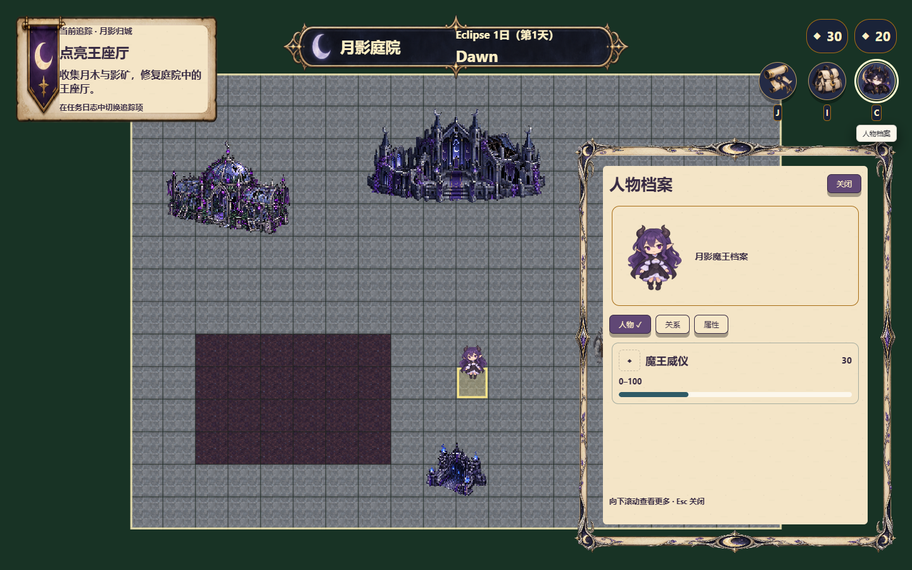

历史对照：本页截图绑定修订01旧目标。2026-10-16已定稿的修订02为无圆框入口、中文单行丝带、资源与入口同排；新版接线证据另见修订02对照。最新版本与判词；不要把本页旧局部PASS视为新版已通过。
这是施工证据页，不是游戏入口，也不是整单通过记录。左侧为已定稿原型截图，右侧为真实共享 Life Host 截图；图片仅等比缩放展示，均可点击打开原尺寸。
两处实机返修已独立局部PASS：透明丝带与三圆形图标；最终入口复查证据。整单尚未完工：威仪、盟约的专属图仍为缺图回退。Owner 已选仅两项真实属性、第三格不渲染，不把原型演示值或金币/月晶/月叶图案冒绑定。原型插画地图与真实可交互地图不是同一内容，不以此页宣称世界美术已对齐。


任务、日期、时段、地点与数值均来自真实数据。正式 Calendar 仍是离散时段，没有伪造原型的连续时钟；两项专属属性图仍待素材线处理。


同骨架羊皮纸侧栏、真实任务筛选与追踪；关闭、Escape 和互斥由现有 Host 动作处理。


真实包内物品、分类与标题/数量详情，不把演示装备或不存在的长描述添加进权威数据。


第三页使用“属性”，不捏造尚不存在的独立城堡档案。关系和资源值仍读取各自权威来源。